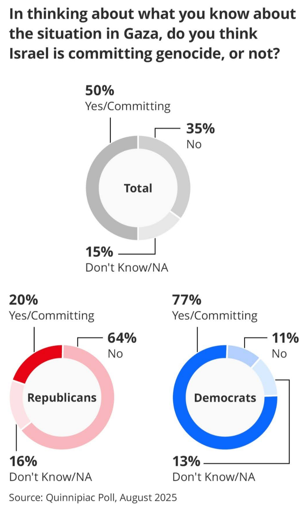

Who the Democratic Party Is Really Losing — and Why Scolding the Left Won’t Fix It
Commentary - Aubrey Waddle
One of the strangest and most counterproductive dynamics inside the Democratic Party today is the fixation on blaming left-wing voters for the party’s 2024 loss. Nearly a year into a second Trump administration that has been, by any reasonable measure, a disaster, a segment of establishment and pro-establishment Democrats has focused much of its energy on anger toward leftists who either voted Green or stayed home.
This narrative persists despite a basic empirical reality: even if every left-wing voter who supported the Green Party in 2024 had instead voted for Kamala Harris, she still would have lost the swing states. The election outcome would not have changed. Yet rather than grappling with why the party failed to mobilize and expand its base, some Democratic leaders and commentators have chosen to scold voters — as if shame, resentment, and moralizing are a viable long-term electoral strategy.
This approach is not just politically ineffective; it is strategically incoherent. Telling voters, “We don’t need you, but also you’re responsible for our loss,” is not a recipe for coalition-building. It is a recipe for further alienation.
I write this as someone who voted for Kamala Harris. I did so reluctantly. Like many on the left, I was deeply alienated by the Biden administration’s foreign policy — particularly its handling of Israel and Palestine. When Biden exited the race and Harris took over the ticket, there was an understandable surge of momentum. Biden was broadly unpopular, and Harris initially benefited from that contrast.
But she quickly squandered that momentum. In debates and interviews, Harris stated — explicitly and repeatedly — that she would not change anything about the previous three to four years. That was not just a political misstep; it was an admission that she would fully inherit the policies that had already made the administration unpopular.
This mattered on multiple fronts. It mattered on economic policy. It mattered on immigration. And it mattered profoundly on foreign policy — especially Gaza. Harris aligned herself entirely with the Biden administration’s handling of Israel and Palestine, signaling no meaningful shift in course even as Israel carried out what a growing share of Democratic voters now describe as a genocide in Gaza. She neither distanced herself from that policy nor offered even a symbolic break. In doing so, she crushed much of the enthusiasm that had briefly emerged.
Despite this, most left-wing voters still chose the lesser of two evils. The idea that the left collectively “abandoned” the Democrats is a myth. What actually happened is that Democratic leadership ignored consistent, data-backed demands from its own base.
Throughout 2023 and 2024, polling showed that Democratic voters were moving left — not right — on key issues. Support for Medicare for All remained strong. Student loan forgiveness polled extremely well. Democratic voters, especially younger ones, increasingly viewed Israel’s actions in Gaza as genocidal. On immigration, foreign policy, and economic messaging, the party’s base favored a more populist, working-class-oriented platform.
Instead, the campaign leaned into a corporatist, moderate message that Democratic leadership believes is “electable.” But this version of moderation is not popular. It is popular with donors, consultants, and media elites. It is not popular with the median Democratic voter.
The Democratic Party now faces a basic contradiction. It cannot simultaneously chase a narrow slice of suburban corporate moderates while expecting the left to fall in line no matter what. In a two-party system, the party that depends on left-wing voters cannot afford to run to the right of its own base and then blame that base for predictable disengagement.
The dominant strategy from party elites appears to be: run another establishment figure — Gavin Newsom, Pete Buttigieg, or someone similar — and rely on anti-Trump fear to mobilize turnout. But this strategy has already failed multiple times. The policy platforms offered by these candidates are largely indistinguishable from Harris’s. The only difference is that they may not face the same sexism and racism Harris did — which she absolutely did face — but that does not change the fundamental problem: the platform itself polls poorly with left-leaning voters.
Demographics make this problem worse over time, not better. Older Democratic voters — particularly Boomers and some Gen X voters — are more moderate. But they are also aging out of the electorate. Millennials, Gen Z, and eventually Gen Alpha are significantly more left-wing. Large portions of these cohorts now identify as independents, not because they are moving right, but because they have been alienated by a Democratic Party that is to their right on economics, healthcare, and foreign policy.
These are not lost voters. They are disillusioned voters. They represent a massive, untapped base that could be mobilized if the party moved toward them instead of away from them.
The alternative path is clear: run candidates whose policy platforms actually reflect the median Democratic voter — not donor preferences. Candidates like Alexandria Ocasio-Cortez, Katie Porter, Rashida Tlaib, or others with similar policy positions are far more aligned with where the base is moving. Left-populist economic messaging, Medicare for All, student debt relief, and a non-interventionist foreign policy are not fringe positions within the Democratic electorate. They are increasingly mainstream.
On foreign policy in particular, the data is unmistakable. Polling now shows a majority — and a growing majority — of Democratic voters holding negative views of Israel’s actions in Gaza.

Scolding left-wing voters will not change this reality. These voters are not disengaged because they are ignorant or childish. They are disengaged because their material interests and moral views are systematically ignored. No amount of cable-news moralizing will make them more enthusiastic about candidates who are to their right.
What will work is pressuring Democratic leadership — Schumer, Jeffries, the broader party apparatus — to run candidates who actually represent the base.
As Senate Democratic leadership has openly admitted, this strategy of trading working-class voters for suburban moderates has been deliberate. Chuck Schumer famously summarized this approach when he said: “For every blue-collar Democrat we lose in western Pennsylvania, we will pick up two moderate Republicans in the suburbs in Philadelphia.” This quote is emblematic of the failed strategy of the past three election cycles — two of which Democrats lost to one of the most extreme and incompetent GOP candidates in modern history.
It reflects a worldview in which working-class voters are disposable, and suburban moderates are the primary prize. The results speak for themselves.
If there is a counter-quote that captures the path forward, it is this: for every suburban DINO that the party loses, it can gain three or four Gen Z or Millennial voters who care deeply about economic justice and U.S. foreign policy. That is not idealism. That is arithmetic.
If the Democratic Party is serious about defeating authoritarianism, it cannot do so by running “fascism-lite” candidates and hoping fear alone will carry the day. The data does not support that strategy. The electorate does not support that strategy. And the future of the party certainly does not support that strategy.
The choice is not between purity and pragmatism. The choice is between following the data — and continuing to lose.